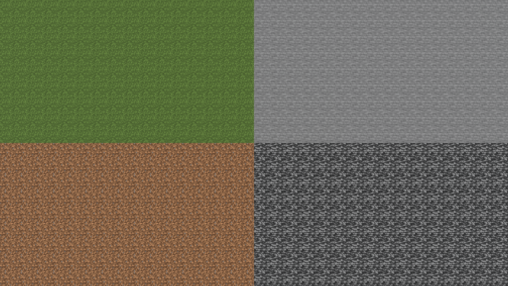
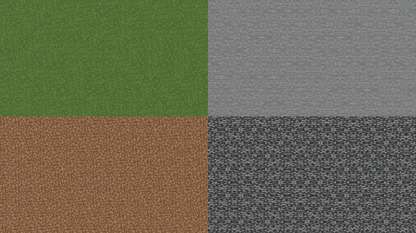
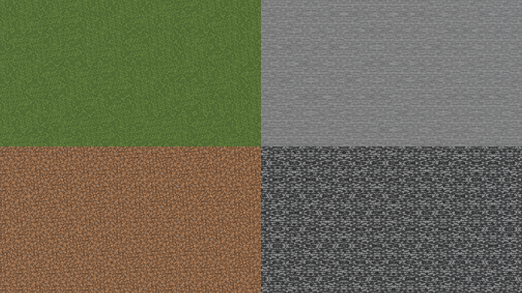
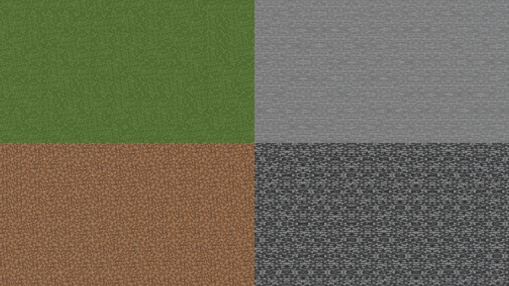
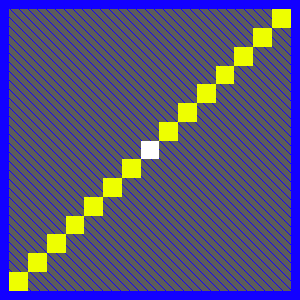
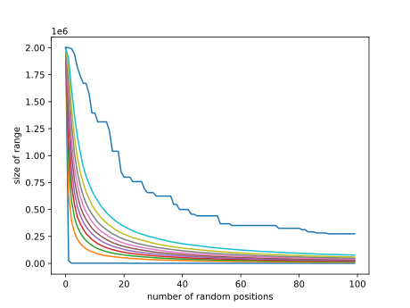
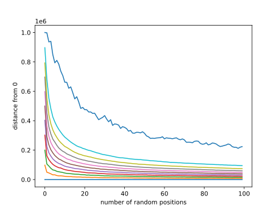

Abstract
This blog post describes what the Minecraft mod NoTextureRotations does and how its old stable random mode can be defeated in theory by combining many samples. By using a python script to simulate receiving multiple positions repeatedly, it is indicated how quickly these techniques converge towards the real position. Afterwards an adjustment of the stable random mode that was added in 1.0.5 of the mod is showcased, which removes the viability of these attacks by ensuring the combination converges towards a position within the chunk at 0,0. This shows that sensitive data needs to be properly masked before involving it in computations where the results are obersvable by an attacker.Texture Rotations In Minecraft
Minecraft is a well-known game where the world is made up of voxels, better known to players as blocks. Since each block has the same size and is aligned, using the same texture for all blocks of a type causes repeating patterns to be visible as seen in Figure 1. To prevent those repeating patterns with natural blocks like grass and stone, Minecraft rotates the textures of these based on the coordinates of the block, resulting in less to no visible repeating patterns as seen in Figure 2. Since the rotations are only based on the coordinates and the function mapping the coordinates to a rotation is fast, one can brute force all possible locations and check if the rotations of the blocks there match the rotations of the blocks in some image. All this is described on seedcrack.com, where there are also tools to do this brute force search.

What does NoTextureRotations do?
To prevent bruteforcing the position of screenshots shared on the internet, especially on competitve and anarchy servers without strong base protection mechanisms, people made various remedies: a plethora of resource packs with various degrees of completeness and effectiveness, as well as the NoTextureRotations mod, which changes the code responsible for mapping the position of a block to the texture rotation it should use, thus affecting all blocks. It had (as of 1.0.4) 3 different modes: No Rotations, Random, and Stable Random. The No Rotations mode is self explanatory, and is how i made Figure 1. In the Random mode, on each call to the function, a new random number is generated using Java's secure random number generator (Fig. 3). In the Stable Random mode, for each chunk (16x16 column of the world) requesting texture rotations a random offset is generated via Java's secure random number, which is then added to the x and z coordinates with the intent to obfuscate the real coordinates (Fig. 4).

The Problem With Random Offsets
The random offset lies within the range of -1,000,000 to +1,000,000. So bruteforcing one position obfuscated with the Stable Random mode gives a big area where the real coordinates may be. However as soon as you get another different random offset for the same in game position, like another screenshot from a different game session, you can reduce the search range by overlapping the possible regions from both obfuscated coordinates. For example if the first obfuscated x coordinate was -186962 and the second was 31018, the real position must be between 31018-1000000=-968982 and -186962+1000000=813038, resulting in a search range of 813038-(-968982)=1782020 blocks, which is 1782020*100/2000000 = 89.101% of the original 2,000,000 blocks. Receiving more obfuscated coordinates gives this technique more chances to converge the search range closer to the real position.
Another attack is averaging the results of multiple obfuscated coordinates. If you roll a dice multiple times and average the results, you are likely to converge towards 3.5. Similarly using the example numbers from the paragraph above, we get an average of (-186962+31018)/2=-77972.0, which is with a distance of |-77972.0-(-22290)| = 55682.0 about 3 times as close to the real value as the first number with a distance of |-186962-(-22290)| = 164672 and about as close as the second number with a distance of |31018-(-22290)| = 53308. Similarly to the attack above, this attack gets results closer to the real position by receiving more obfuscated coordinates.
Amplifying these problems are two implementation choices. By not offsetting the y coordinate, bruteforcing one set of obfuscated coordinates allows other searches to be constrained to that y coordinate, speeding them up massively. The more drastic problem however is that the same offset is used for both the x and z coordinate, resulting in the obfuscated coordinates being on the same diagonal line as the real coordinates, so the actual area you would have to search ingame is not the entire ±1,000,000 square in both x and z directions, but just the diagonal line with the center being the obfuscated coordinates (Fig. 5).

To show how fast the two attacks give usable results, there is a python script that simulates 10,000 different runs of 100 obfuscated coordinate values (along one axis), and creates graphs for the percentiles of range (Fig. 6) and average (Fig. 7). The area under each line contains 10% more samples than the line below it, with the lowest line being the samples closest to the true coordinate / with the smallest range, and the highest line being the samples furthest from the true coordinate / with the biggest range.


How this was fixed
The fix commit for these attacks masks out all but the bottom 4 bits. This causes the offset to be added to the position relative to the current chunk (so in the range 0-15). As such using the attacks described above on the resulting obfuscated coordinates only results in positions close to the chunk at 0,0 being found, regardless of the actual coordinates.Conclusion
The attacks presented here show that one should never carelessly involve potentially sensitive information in calculations where an attacker might observe the result. Sensitive information should be either entirely removed, partially redacted (as done in the fix for this), or masked in a way that makes it mathematically impossible to get it back.
From an organizational side, the software being open source and the developer responding and caring about their program greatly contributed to this problem being discovered and fixed quickly. There are likely other programs that would benefit from having more eyes checking them, looking for ways to attack them, and looking for ways how to prevent those attacks.
And a final word for all those using NoTextureRotations in an older version: update to 1.0.5.